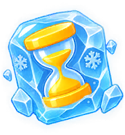
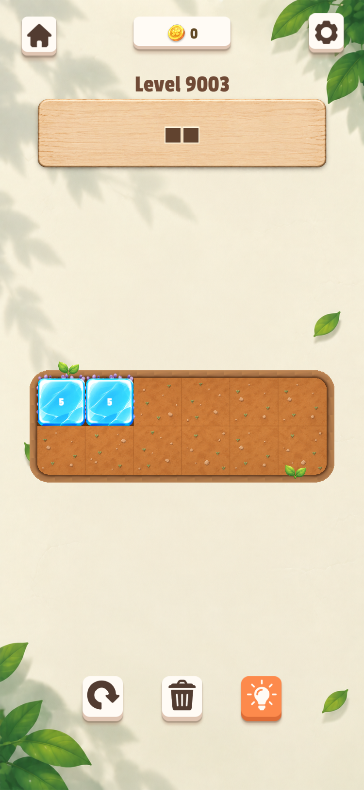
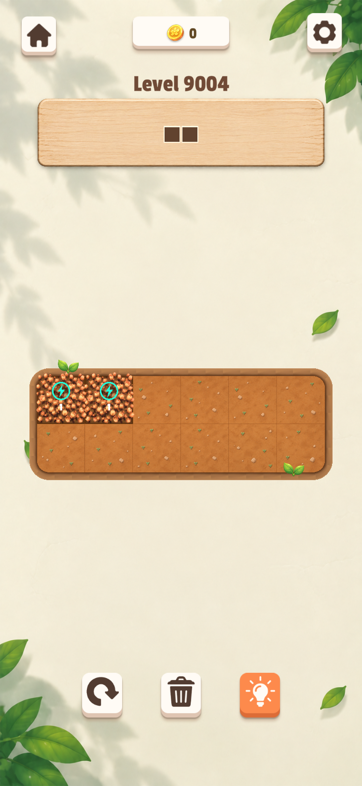
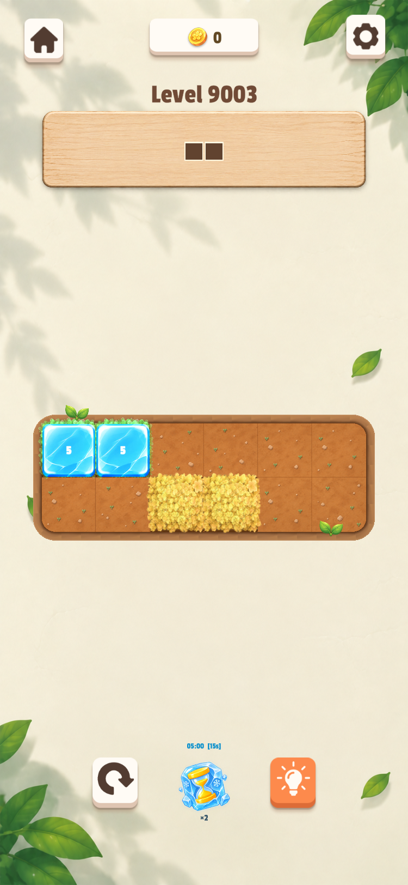
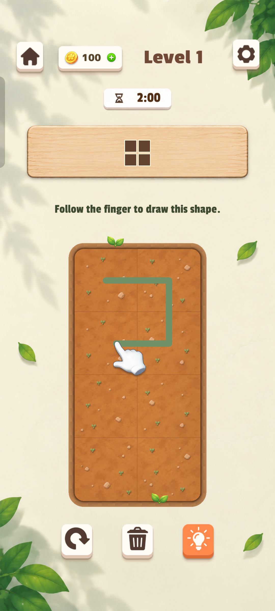
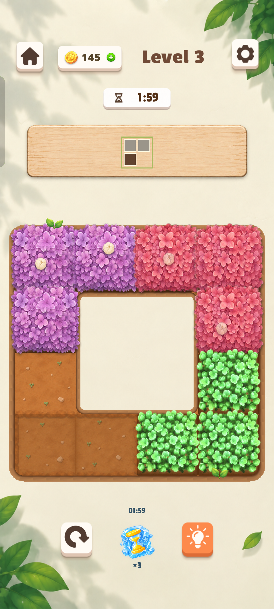
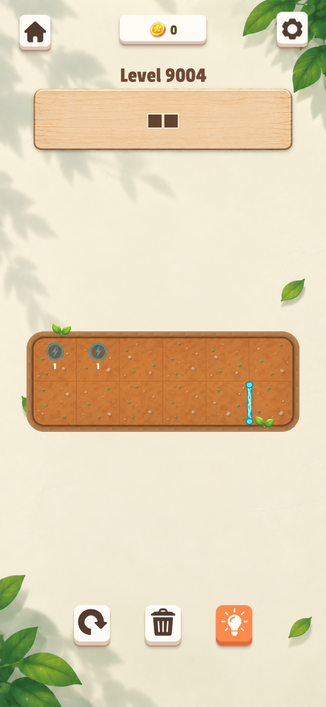

冻结关卡时间道具 / 邻接范围，建议同步更新
181 × 196
2026-10-22 · 基于花田 Unity 当前引用、原版提取资源和既有验证截图。这里“机器门”对应代码中的机关门 / Gate。
| 优先级 / 资源 | 当前问题 | 建议交付 |
|---|---|---|
| P0 · FrozenZone 101 × 101 | 雪花圆徽章偏道具按钮，像浮在泥土上。 | 霜覆地面 / 霜花标记；低饱和灰蓝、奶白霜边和柔和投影，保留雪花识别。不能画成不可通行的实体冰山：此处允许落子，接触后才锁定花块。 |
| P0 · FrozenBlock 160 × 160 | 高饱和青蓝与厚高光抢眼，遮挡花色；当前每格都铺一张冰块。 | 半透明薄冰覆盖，边缘霜白、中心透出花朵和底色。第一版按单格透明 PNG 交付；若要整片连续冰壳，再另做边角拼接并修改渲染。不要把数字烘焙进图。 |
| P0 · GateContact 128 × 128 | 电圈＋闪电是科技语义；仅变色不足以表达连通。 | 木质/黄铜机关座，配花苞或叶片标记。未激活收拢、激活展开并柔光；保留端子编号/配对识别。建议交付两态，程序需增加状态切图。 |
| P0 · GateBar 186 × 29 | 电弧栏杆与花园材质不一致，开启时完全消失。 | 细木闸杆＋黄铜轴或绳索；与普通静态栅栏明显区分。第一版替换关闭态，开启仍隐藏；完整版拆门柱与门杆，做收回/抬起动画及开启残留门柱。 |
| P1 · FreezeTime 181 × 196 | 来自同一原版，但属于暂停关卡计时的道具。 | 统一花田按钮底座、阴影和雪花/时钟图标，和“花块被冻住”保持语义区分。单独排期，不计入核心四张。 |
第一版：重画 4 张核心图；调 tint、数字与缩放，沿用现有开关逻辑。完整版本：端子两态、门柱/门杆拆层、开合与融冰反馈；具体图片张数由动画实现方式决定，不把每个状态都硬算成一张图。
材质跟随现有木板与泥土，软边、柔和明暗和低强度高光；冰仍保留冷色辨识。关门在土色棋盘上必须清楚阻断，开门必须显著可通行；普通栅栏与机关门不能混淆。冻结态应仍能看见花块颜色、轮廓与数字。检查横竖门、多段门、多端子、密集棋盘、冰冻和端子重叠，以及关门清除冻结花块。
交付透明 PNG，保留中心锚点、有效区域和现有长宽比；当前导入为 Sprite、中心 pivot、100 PPU、无九宫格边距。需要提高分辨率可按原比例放大，不建议直接拉伸木纹。替换现有资源时保留项目内 .meta；本包 .meta 仅作参数存档，勿将它们作为新资源重复导入同一项目。
冻结关卡时间道具 / 邻接范围，建议同步更新
181 × 196
整块冻结覆盖 / 必须重画
160 × 160

冰冻触发格 / 必须重画
101 × 101

关闭门栏 / 必须重画
186 × 29
机关端子 / 必须重画
128 × 128
同名变体、光圈、光效和覆盖层一起抽出；这些文件未被当前 FlowerObstacleArt 的四个引用使用。不要将它们全部列为必做资产。

原版候选；不代表当前已接入
160 × 160
原版候选；不代表当前已接入
210 × 53
原版候选；不代表当前已接入
128 × 128
原版候选；不代表当前已接入
186 × 29
原版候选；不代表当前已接入
128 × 128

原版候选；不代表当前已接入
181 × 196

原版候选；不代表当前已接入
128 × 128
原版候选；不代表当前已接入
128 × 128
原版候选；不代表当前已接入
101 × 101
原版候选；不代表当前已接入
128 × 128
原版候选；不代表当前已接入
380 × 138
以下为此前验证截图，并非本次重新运行；当前代码引用已另行检查。

历史验证截图；非本次运行截图
750 × 1624

历史验证截图；非本次运行截图
750 × 1624

历史验证截图；非本次运行截图
750 × 1624

历史验证截图；非本次运行截图
750 × 1624
01-current：当前引用 PNG 与导入参数；02-reference：原版候选；03-context：现有花田效果；04-code：引用、渲染、道具代码快照。manifest.json 记录原路径、尺寸、SHA-256 与完全匹配的来源文件。抽离采用副本，不改动游戏运行资源。
2 张安卓实机＋4 张 Unity 运行验证。均为已有记录，本次未连接手机，未新增真机拍摄。点击图片查看原尺寸。
展示奶白背景、木质目标板、泥土棋盘、绿叶装饰和教学手势，是新增机制应匹配的画风基准。

画面实际显示 Level 3，展示紫/红/绿花块及底部冻时沙漏 ×3。原文件名虽含 gm131，但不能据此标为第 131 关或机关门实测。

Level 9003：左上两格覆盖蓝色冰壳，各显示 5 秒。观察冰壳亮度、遮挡花色，以及每格重复倒计时。

Level 9004：左上两个闪电端子未接通；右下竖向电光门栏可见，表示阻断。

Level 9004：左上花块连接两个端子，端子变为青绿色；右下原门栏位置已隐藏。与上一张成对比较。

Level 9003：底部沙漏显示 ×2 和 05:00 [15s]；左上花块显示冰冻数字 5。两套计时属于不同机制，本图仅证明该显示状态，不单独证明计时过程。